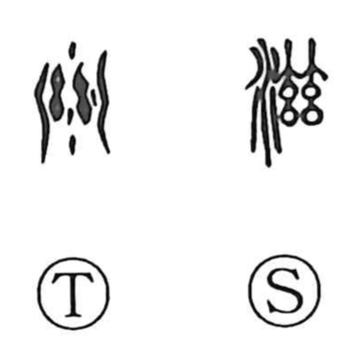

滋

Kun: fueru, shigeru | On: ji
to increase ・ to grow ・ to moisten ・ luxuriant ・ thick ・ delicious ・ good ・ to nurture
Explanation
滋 is a phono‑semantic character built on the phonetic element 茲, which originally pictured bundles of thread laid out in rows and conveyed the idea of abundance. With the water element added, the graph depicts those bundles being dipped into water; as they soak, their weight swells—an image of “increasing.” From this core sense it broadened to mean “to moisten,” “to grow thick and luxuriant,” and, by extension, “tasty” or “good.” It is also written in place of 蔘 (ji) with the sense of “to raise, bring up.”